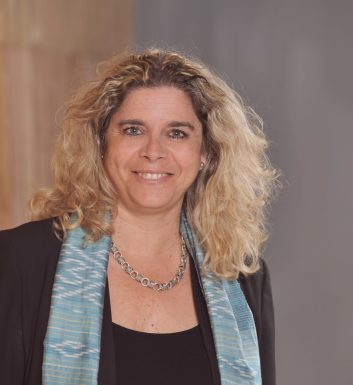

Transfert de connaissances
Des échanges franco-québécois-canadiens concrets entre experts et décideurs.
Édition 2026
Du 9 au 11 novembre à Montréal, Québec, Sherbrooke et Ottawa.
Le rendez-vous francophone des décideurs, experts et institutions d’Auvergne-Rhône-Alpes, du Québec et de la francophonie canadienne.
Le plus grand rendez-vous réunissant les territoires d’Auvergne-Rhône-Alpes (France), du Québec et de la francophonie canadienne.
Les EJC rassemblent, alternativement sur chaque territoire, des milliers d’experts et de décideurs autour d’évènements francophones et interdisciplinaires. Pendant les EJC, les échanges font naître des collaborations concrètes pour une société plus innovante et responsable.

C’est en mêlant les savoirs et les expériences des mondes économique, académique, institutionnel, culturel et scientifique que nous faisons évoluer la société.
Des échanges franco-québécois-canadiens concrets entre experts et décideurs.
Une plateforme interdisciplinaire pour tester, partager et faire émerger des solutions.
Un cadre qui transforme les rencontres en projets utiles pour les territoires.
Des profils venant des secteurs économique, institutionnel, scientifique et universitaire.




Titulaire de la Chaire d’excellence en recherche du Canada en Une seule santé urbaine
Université de Montréal
Voir le profil